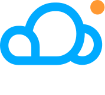

فروردین ۱۴۰۵ — تاکنون
دورکار · تهران، ایران
توسعهدهنده ارشد وردپرس

AbrNOC · میزبانی و زیرساخت ابریتوسعهدهنده ارشد با تمرکز روی توسعه ویجتهای المنتور، ابزارهای داخلی SEO، و رهبری یک مهاجرت استراتژیک از المنتور به گوتنبرگ برای پرفورمنس بهتر.
- توسعه ویجتهای اختصاصی المنتور بر اساس نیازهای تیم محصول و مارکتینگ.
- بازنویسی ویجتهای استاتیک قبلی بهصورت داینامیک و دادهمحور.
- ساخت ابزارها و قابلیتهای on-page برای پشتیبانی از گردش کار تیم سئو.
- رهبری یک پروژه جانبی برای مهاجرت قالب و کتابخانه ویجتهای شرکت از المنتور به بلوکهای نیتیو گوتنبرگ — با هدف افزایش قابلتوجه پرفورمنس.